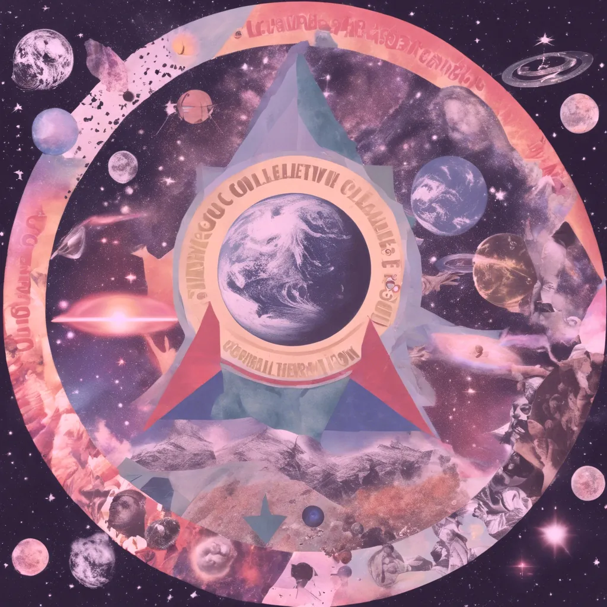

How Activism is Spirituality: Reclaiming Personal Power for Collective Liberation

In today’s complex world, reclaiming personal power is one of the most radical and transformative acts you can undertake. While spirituality and activism may seem like separate paths, Soul Activism teaches that they are deeply intertwined. True spiritual growth is not just about inner peace or feeling good—it is about stepping into a more compassionate, empowered version of yourself, while simultaneously using that power to break down systems of oppression. Spirituality is about collective liberation, and it calls on each of us to become active participants in the transformation of our world.
The Spiritual Activism Journey: Reclaiming Power and Healing from Suffering
We often begin our spiritual journey seeking to discover who we are and to reclaim power where we feel it has been stripped away. There is a profound joy in learning about our gifts, recognizing our personal strengths, and healing from the pain and suffering we have endured. This empowerment is crucial. It allows us to reconnect with ourselves, our divinity, and our purpose.
But the core of true healing work goes beyond just the feel-good aspects of self-love and personal empowerment. Healing is not complete until it is paired with action. Much of our suffering is a result of our personal karma—whether from this life or past lives—combined with the oppressive systemic structures of our society. In essence, pain and suffering occur when these oppressive structures interact with our individual karmic cycles.
This is where true spirituality and activism intersect. Healing ourselves is important, but to fully transcend karmic suffering, we must also look outward to address the systems of oppression that influence all of our lives. Our spiritual evolution must include both inner and outer work. Without actively challenging the oppressive forces that affect us all—whether those forces be patriarchy, racism, or capitalism—our healing is incomplete.
Soul Activism calls on us to reclaim action and an integral part of spirituality. But personal growth alone cannot liberate us. Only by combining our personal healing with a commitment to social activism can we create the conditions for collective liberation.
The Danger of Spiritual Bypassing: Action is the Key to Growth
One of the greatest pitfalls in modern spirituality is spiritual bypassing—using spirituality as an excuse to avoid taking action in the real world. Spirituality is a deep and personal connection to the divine being within each of us, but it cannot be an excuse to remain inactive. Simply basking in the joy of knowing who we are feels wonderful, but without action, what is the point?
Knowing who we truly are is only half of the journey toward empowerment. The other half requires activating that power within the context of our communities and using it to heal the overarching oppressive systems that dominate our society—whether it be patriarchy, capitalism, or racism. The divine forces that guide us—whether you call it Gaia, Source, or another higher power—do not enlighten us simply for our own benefit. They call on us to work together to create massive healing for the world.
When we discover our spiritual gifts, we are being given the tools to create positive change not just for ourselves but for the collective. It is our duty to answer that call. Spiritual bypassing—remaining passive or only focusing on personal joy—misses the entire point of spiritual awakening. Spirituality is about right relation and right action. And there is no action more righteous than joining the movement to liberate ourselves and others from systems of oppression.
Self-Accommodation, True Self-Care, and Personal Healing Are Still Liberation
While action is essential to spiritual activism, it’s important to remember that self-accommodation, true self-care, and personal healing are all part of the liberation process. We cannot fight for a liberated future if we are not caring for ourselves.
The key is balance: self-care alone is not effective if it is not paired with right action toward collective liberation, but action without care is unsustainable.
Becoming a soul activist doesn’t mean putting ourselves through more suffering. We live in a society that often glorifies individualism, leading us to believe that righteous action means fighting the world alone. This is a colonial mindset at work. The truth is, the most powerful and righteous action we can sometimes take is to dismantle this narrative and allow ourselves to ask for help. It means recognizing that healing ourselves and healing our communities go hand in hand.
Sometimes, the bravest thing we can do is reach out—to talk to our neighbors, connect with people about honest, real topics, and allow ourselves to be vulnerable. Liberation is not just about the big, bold moves; it’s also about building a network of trust, compassion, and mutual support. It’s about sharing the journey with others, rather than walking the path alone.
And yes, when the time calls for it, righteous action may include standing up for social justice, voting, or taking a public stance for liberation. It is about knowing when to rest, when to heal, and when to rise and take action. Self-care, self-accommodation, and personal healing are not indulgences; they are essential tools for sustaining the long-term fight for collective liberation. They allow us to stay grounded, connected, and empowered as we do the work of healing ourselves and our communities.
Empowerment Beyond Self: Using Your Power for Collective Good
Many people get a taste of spiritual evolution, feel the rush of self-empowerment, and then stop there. They rest in the comfort of feeling good about themselves, believing that the journey is complete. But there is so much more to do with this power when we use it for the collective good.
There is no end to enlightenment. Once we begin the journey of spiritual growth, there are realizations after realizations, layers of healing, and levels of empowerment waiting for us. This growth is not just for the self—it’s a call to bring our power into the world and use it to dismantle the oppressive systems that hold our communities back.
The joy of self-empowerment is only a small part of the picture. Real transformation comes when we take that empowerment and share it with others. When we use our spiritual gifts to hold space for our collective growth, we contribute to a much larger, more powerful movement toward liberation. Each step on our personal spiritual journey becomes part of a greater mission to heal our communities and dismantle the systemic structures that perpetuate suffering.
The Ongoing Journey: There Is No End to Enlightenment
The road of spiritual evolution is infinite. Each step brings new realizations, deeper understanding, and more profound growth. But this growth must always be paired with action. We are not meant to evolve in isolation; we are meant to evolve together. Every breakthrough, every moment of self-empowerment, gives us the tools to contribute to the collective liberation of our world.
Soul Activism reminds us that spirituality is inherently activism. True spiritual awakening is about questioning not just our personal beliefs but also the systems that oppress us all. It asks us to challenge the structures of power that dominate our lives, and to use our personal growth to contribute to the freedom of others.
The power you gain through your spiritual journey is meant to be shared. It is meant to bring healing not just to yourself but to your community, your culture, and the world at large. True spirituality is always about liberation—for yourself and for the collective.
Final Thoughts: Spirituality as a Path to Collective Liberation
Soul Activism teaches that spirituality is not a passive journey. It is a path of empowerment and action. We are called to heal ourselves, yes—but we are also called to heal the world. If your spiritual practice stops at self-empowerment without leading to collective action, it is incomplete.
True spiritual growth demands that we step into the world as activated, compassionate beings who are committed to dismantling the systems of oppression that cause suffering. When we combine spiritual evolution with social activism, we create powerful movements that have the potential to liberate us all.
Let us not stop at self-empowerment. Let us use our gifts, our power, and our spiritual awakening to fight for a world where everyone is free.
Interested in more? Take a journey through deeper understanding in my Decolonizing and Rewilding the Tarot: Advanced Readers Course on Udemy.
Coming 2025
Blessings of Infinite Joy
Zan Dean